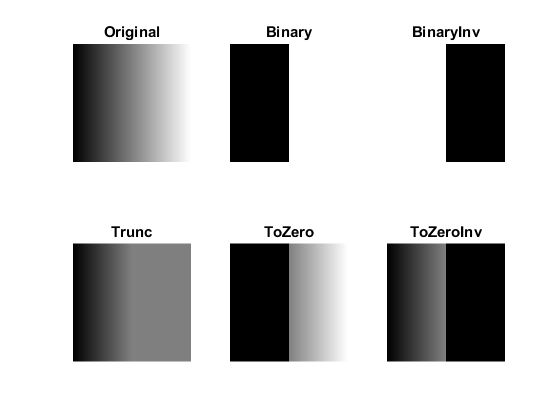

Image Thresholding
In this demo, we will learn about Simple thresholding, Adaptive thresholding, Otsu's thresholding, and how to use corresponding OpenCV functions: cv.threshold, cv.adaptiveThreshold, etc.
Sources:
Contents
Simple Thresholding
Here, the matter is straight forward. If pixel value is greater than a threshold value, it is assigned one value (may be white), else it is assigned another value (may be black). The function used is cv.threshold. First argument is the source image, which should be a grayscale image. Second argument is the threshold value which is used to classify the pixel values. Third argument is the maxVal which represents the value to be given if pixel value is more than (sometimes less than) the threshold value. OpenCV provides different styles of thresholding and it is decided by the fourth parameter of the function. The different types are:
- Binary
- BinaryInv
- Trunc
- ToZero
- ToZeroInv
Documentation clearly explain what each type is meant for. Please check out the documentation.
The output obtained is our thresholded image.
create a gradient grayscale image
img = repmat(uint8(0:255), 256, 1);
threshold image using the various types
types = {'Original', 'Binary', 'BinaryInv', 'Trunc', 'ToZero', 'ToZeroInv'};
figure(1)
for i=1:6
if i==1
out = img;
else
out = cv.threshold(img, 127, 'MaxValue',255, 'Type',types{i});
end
subplot(2,3,i), imshow(out), title(types{i})
endOtsu's Binarization
In global thresholding, we used an arbitrary value for threshold value, right? So, how can we know a value we selected is good or not? Answer is, trial and error method. But consider a bimodal image (In simple words, bimodal image is an image whose histogram has two peaks). For that image, we can approximately take a value in the middle of those peaks as threshold value, right? That is what Otsu binarization does. So in simple words, it automatically calculates a threshold value from image histogram for a bimodal image. (For images which are not bimodal, binarization won't be accurate.)
Since we are working with bimodal images, Otsu's algorithm tries to find a threshold value () which minimizes the weighted within-class variance given by the relation :
where
It actually finds a value of which lies in between two peaks such that variances to both classes are minimum.
In OpenCV, the cv.threshold function is used, but pass the string Otsu instead of the threshold value. Then the algorithm finds the optimal threshold value and returns it as the second output. If Otsu thresholding is not used, this value is same as the threshold value you used.
Check out below example. Input image is a noisy image. In first case, I applied global thresholding for a value of 200. In second case, I applied Otsu's thresholding directly. In third case, I filtered image with a 5x5 Gaussian kernel to remove the noise, then applied Otsu thresholding. See how noise filtering improves the result.
create a noisy image
img = 55 * ones(400,600,'uint8'); img = cv.rectangle(img, [150 110 300 180], 'Color',200, 'Thickness','Filled'); if mexopencv.require('images') img = imnoise(img, 'gaussian', 0, 0.02); else img = uint8(double(img) + randn(size(img)) * sqrt(0.02) * 255); end
threshold it three different ways
figure(2) for i=1:3 switch i case 1 % global thresholding with a fixed value [bw,thresh] = cv.threshold(img, 200); str1 = 'Noisy Image'; str2 = sprintf('Global Thresh (%d)', thresh); case 2 % global thresholding using Otsu's method to find optimal value [bw,thresh] = cv.threshold(img, 'Otsu'); str1 = 'Noisy Image'; str2 = sprintf('Otsu Thresh (%d)', thresh); case 3 % global thresholding on smoothed image img = cv.GaussianBlur(img, 'KSize',[5 5]); [bw,thresh] = cv.threshold(img, 'Otsu'); str1 = 'Blurred'; str2 = 'Otsu Thresh'; end % show input image subplot(3, 4, 1+(i-1)*4) image(img), title(str1) set(gca, 'CLim',[0 255], 'XTick',[], 'YTick',[]) % show its histogram subplot(3, 4, [2 3]+(i-1)*4) counts = histc(double(img(:)), 0:255); h = bar(0:255, counts, 'histc'); set(h, 'EdgeColor','none', 'FaceColor',[0 0.5 0.7]) set(gca, 'XLim',[0 256], 'XTick',[], 'YTick',[]) title('Histogram') % show output image subplot(3, 4, 4+(i-1)*4) image(bw), title(str2) set(gca, 'CLim',[0 255], 'XTick',[], 'YTick',[]) end colormap(gray(256))
Adaptive Thresholding
In the previous sections, we used a global value as threshold value. But it may not be good in all the conditions where image has different lighting conditions in different areas. In that case, we go for adaptive thresholding. In this, the algorithm calculate the threshold for a small regions of the image. So we get different thresholds for different regions of the same image and it gives us better results for images with varying illumination.
It has three "special" input params and only one output argument.
- Adaptive Method: It decides how thresholding value is calculated, with two possible values: 1) Mean, threshold value is the mean of neighbourhood area. 2) Gaussian, threshold value is the weighted sum of neighbourhood values where weights are a gaussian window.
- Block Size: It decides the size of neighbourhood area.
- C: It is just a constant which is subtracted from the mean or weighted mean calculated.
Below piece of code compares global thresholding and adaptive thresholding for an image with varying illumination:
img = cv.imread(fullfile(mexopencv.root(),'test','sudoku.jpg'), 'Grayscale',true); img = cv.medianBlur(img, 'KSize',5); [bw1, thresh] = cv.threshold(img, 'Otsu'); bw2 = cv.adaptiveThreshold(img, 'Method','Mean', 'BlockSize',11, 'C',2); bw3 = cv.adaptiveThreshold(img, 'Method','Gaussian', 'BlockSize',11, 'C',2); figure(3) subplot(221), imshow(img), title('Original Image') subplot(222), imshow(bw1), title('Otsu Thresholding') subplot(223), imshow(bw2), title('Adaptive Mean Thresholding') subplot(224), imshow(bw3), title('Adaptive Gaussian Thresholding')
References
- Digital Image Processing, Rafael C. Gonzalez